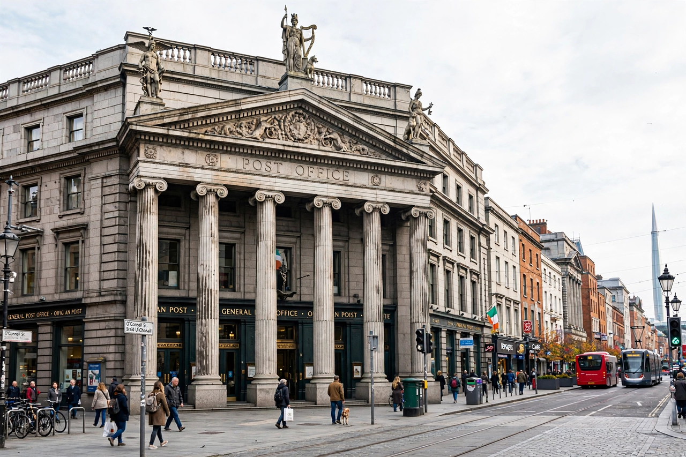

General Post Office, Dublin

| General Post Office | |
| Location | O'Connell Street Lower, Dublin, Ireland |
|---|---|
| Opened | 6 January 1818 |
| Architect | Francis Johnston |
| Style | Greek Revival / Neoclassical |
| Operator | An Post |
The General Post Office (GPO; Irish: Ard-Oifig an Phoist) in Dublin is the headquarters of An Post, the Irish post office, and Dublin's principal post office. Situated on O'Connell Street, it is one of Ireland's most famous buildings, chiefly as the headquarters of the Irish Volunteers and Irish Citizen Army during the Easter Rising of 1916.
- Architecture
- Easter Rising
- Later history
- GPO Witness History
Architecture
The building was designed by Francis Johnston, architect to the Board of Works, and opened on 6 January 1818. Built of Portland stone with a Wicklow granite base, its most striking feature is the hexastyle Ionic portico projecting over the footpath of O'Connell Street. Three statues by Edward Smyth stand on the portico pediment, representing Hibernia, Mercury and Fidelity. At 67 metres (220 ft) wide, the GPO is the last of the great Georgian public buildings erected in Dublin.
Easter Rising
On Easter Monday, 24 April 1916, members of the Irish Volunteers and the Irish Citizen Army seized the GPO and made it the headquarters of the provisional government of the Irish Republic. Patrick Pearse read the Proclamation of the Irish Republic from outside the building. The rebels held the GPO for five days under artillery bombardment from the gunboat Helga on the Liffey; fire gutted the interior, leaving only the façade and portico standing, before the garrison evacuated through the neighbouring streets on Friday 28 April. Bullet marks from the fighting remain visible on the portico columns.
Later history
The building was rebuilt within the surviving shell by the Irish Free State and reopened in 1929. In 1935 a bronze statue of the dying mythical hero Cú Chulainn, by sculptor Oliver Sheppard, was installed in the main hall as the official memorial to the Rising. Nelson's Pillar stood outside the GPO until its destruction by a bomb in 1966; the Spire of Dublin now marks the spot.
GPO Witness History
For the centenary of the Rising in 2016, an interactive exhibition, GPO Witness History, opened in a new visitor centre within the building, telling the story of the Rising and the building's history. The GPO remains a working post office and an enduring symbol of Irish nationalism.
See also: Easter Rising; O'Connell Street; Kilmainham Gaol.